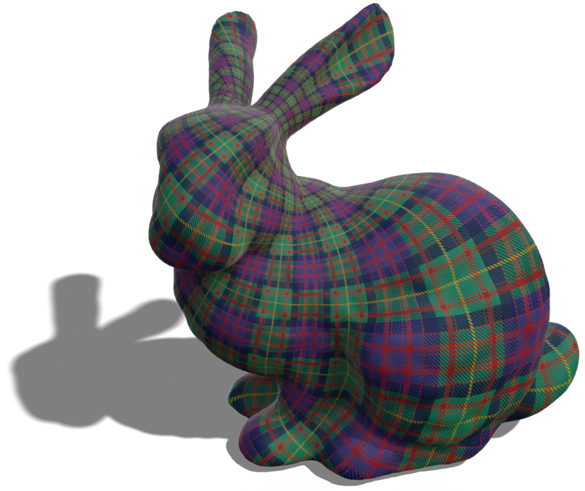
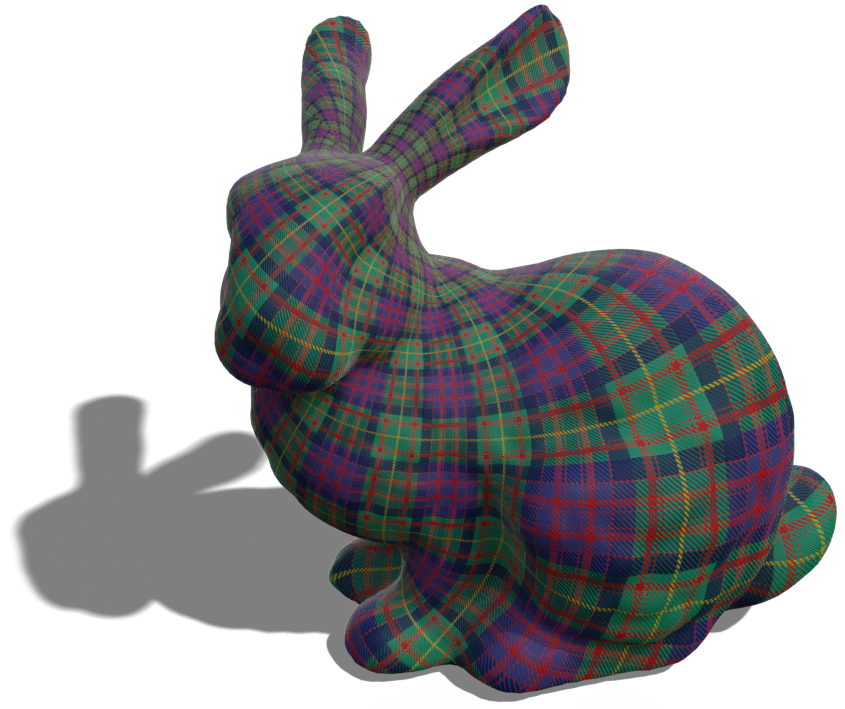

Tartan Shader
People often visualize parameterizations using checkerboards, but you can also use tartan!


Blender
You can find an .osl file for the shader here. You can use this file in Blender's node editor with a script node. Unfortunately, Eevee doesn't support custom shaders yet, so you have to render with Cycles to use this shader.
In order to render with a custom shader, you have to check the Open Shading Language option in the Render menu.
Here's a GLSL version, used here on ShaderToy, and here in WebGL.
//==== tartan shader
void STRIPE(vec2 Coord, float x, float y, float center, float width, inout float bumpHeight,
inout vec3 oldcolor, vec3 newcolor, bool shift) {
float sWidth = 0.05;
float stripe_coord = mod(x - y + sWidth*0.25, sWidth);
float slopeWidthPix = 5.;
vec2 fw = fwidth(Coord);
float scale = .1*max(fw.x, fw.y);
float pWidth = slopeWidthPix * scale;
float stripeD = abs(stripe_coord - 0.5*sWidth);
float t = smoothstep(0.25*sWidth-pWidth, 0.25*sWidth+pWidth, stripeD);
if (shift) t = 1.-t;
float minDx = min(abs(x-center), abs(x-(1.-center)));
float sx = min(width / pWidth, 1.)*(1.-smoothstep(width-pWidth, width + pWidth, minDx));
vec3 newcolorx = (1.-sx)*oldcolor + (sx)* newcolor;
float bumpHeightx = sqrt(1.-(1.-sx)*pow(abs(minDx / width), 0.5));
float minDy = min(abs(y-center), abs(y-(1.-center)));
float sy = min(width / pWidth, 1.)*(1.-smoothstep(width-pWidth, width + pWidth, minDy));
vec3 newcolory = (1.-sy)*oldcolor + (sy)* newcolor;
float bumpHeighty = sqrt(1.-(1.-sy)*pow(abs(minDy / width), 0.5));
bumpHeight *= (t * bumpHeightx + (1.-t)*bumpHeighty);
oldcolor = t * newcolorx + (1.-t) * newcolory;
}
void base_stripe_bumps(float x, float y, inout float bumpHeight) {
float sWidth = 0.05;
float stripe_coord = mod(x - y, sWidth) / sWidth;
float minD = min(abs(stripe_coord), min(abs(1.-stripe_coord), abs(stripe_coord-0.5)));
bumpHeight *= sqrt(1. - pow(abs(minD/0.23) , 0.5));
}
vec3 tartan(vec2 Coord) {
float paramScale = .25;
// Apply the checkerboard effect
float mX = mod(Coord.x, 2.*paramScale) / (2.*paramScale); // in [0, 1]
float mY = mod(Coord.y, 2.*paramScale) / (2.*paramScale);
vec3 blue = vec3(18.0 / 255., 18.0 / 255., 80.0 / 255.);
vec3 green = vec3(0.00, 0.40, 0.20);
vec3 dark_green = vec3(0.00, 0.10, 0.10);
vec3 dark = vec3(0.00, 0.02, 0.13);
vec3 red = vec3(0.80, 0.00, 0.00);
vec3 yellow = vec3(1.00, 0.70, 0.00);
vec3 outColor = dark_green;
float bumpHeight = 1.;
// base_stripe_bumps(mX, mY, bumpHeight);
STRIPE(Coord, mX, mY, 0.000, 1.000, bumpHeight, outColor, blue, true);
STRIPE(Coord, mX, mY, 0.000, 0.225, bumpHeight, outColor, dark_green, false);
STRIPE(Coord, mX, mY, 0.000, 0.225, bumpHeight, outColor, green, true);
STRIPE(Coord, mX, mY, 0.275, 0.050, bumpHeight, outColor, dark, false);
STRIPE(Coord, mX, mY, 0.150, 0.020, bumpHeight, outColor, red, true);
STRIPE(Coord, mX, mY, 0.110, 0.004, bumpHeight, outColor, red, true);
STRIPE(Coord, mX, mY, 0.325, 0.004, bumpHeight, outColor, red, true);
STRIPE(Coord, mX, mY, 0.420, 0.020, bumpHeight, outColor, red, true);
STRIPE(Coord, mX, mY, 0.460, 0.004, bumpHeight, outColor, red, true);
STRIPE(Coord, mX, mY, 0.000, 0.010, bumpHeight, outColor, yellow, true);
return outColor;
}